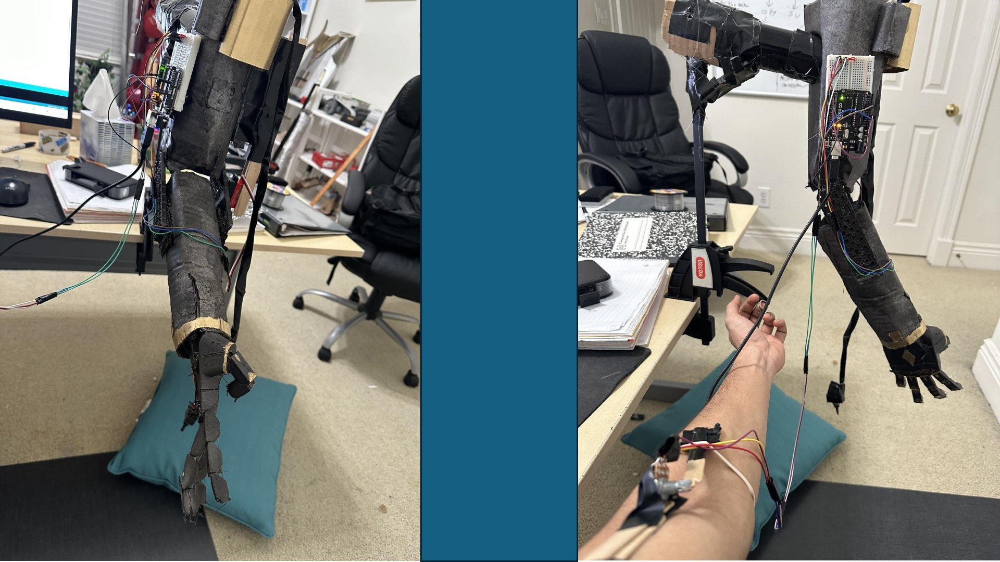

PERSONAL PROJECT
Elbow-Controlled Prosthetic Arm
A prosthetic arm designed to move in sync with simple elbow movements using Arduino control, a servo motor, and a potentiometer.

OVERVIEW
Controlling a Prosthetic Arm with Elbow Movement
The goal of this personal project was to design and build a prosthetic arm that could respond directly to simple elbow movements.
As the user moved their elbow, the control system translated that movement into a corresponding motion of the prosthetic arm.
MY ROLE
Independent Design & Build
I designed, assembled, programmed, and tested the prosthetic arm as an independent project.
I used Arduino programming, a potentiometer, and a servo motor to create a simple control system that synchronized the prosthetic arm's movement with the user's elbow motion.
CONTROL SYSTEM
Elbow Movement → Arduino → Servo
The potentiometer provided the input to the Arduino, which used the measured position to determine how the servo motor should move.
The servo then actuated the prosthetic arm, allowing its motion to follow changes in elbow position.
Input
Elbow movement changes the potentiometer input.
Processing
Arduino code interprets the input position.
Motion
The servo moves the prosthetic arm in response.
DEMONSTRATION
Prosthetic Arm in Operation
The demonstration shows the prosthetic arm responding to elbow movement through the Arduino-controlled servo system.